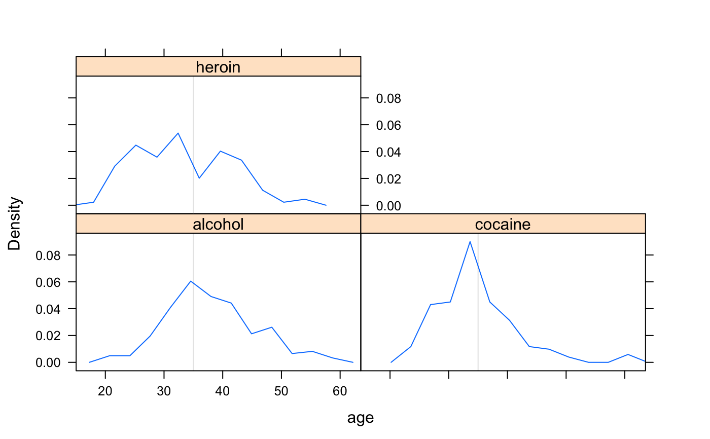
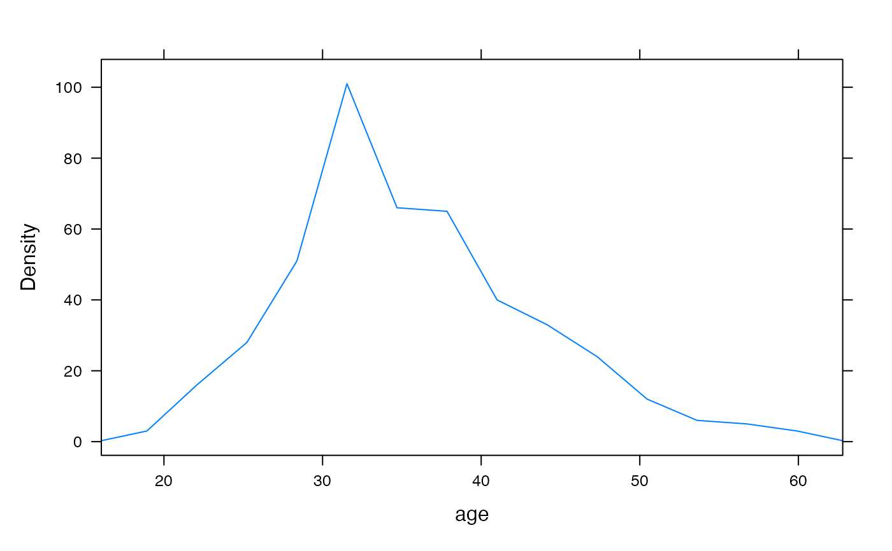
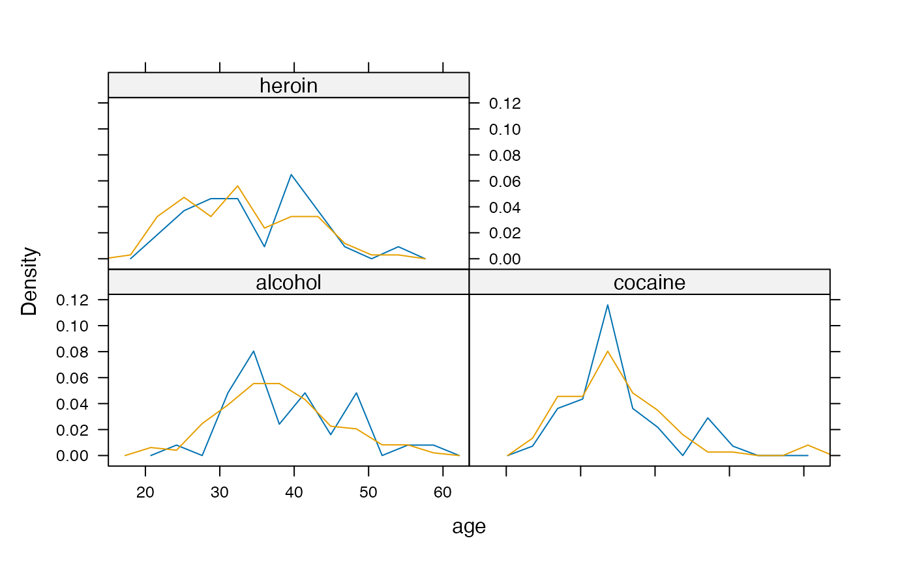
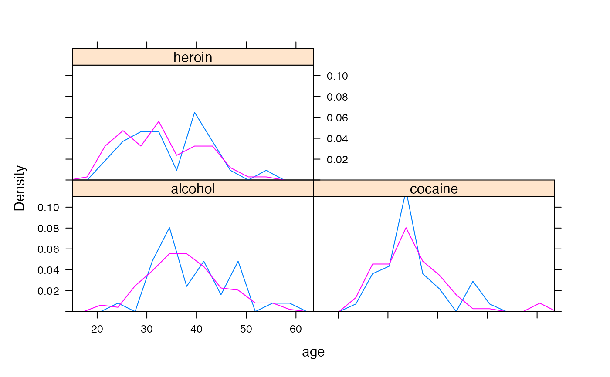
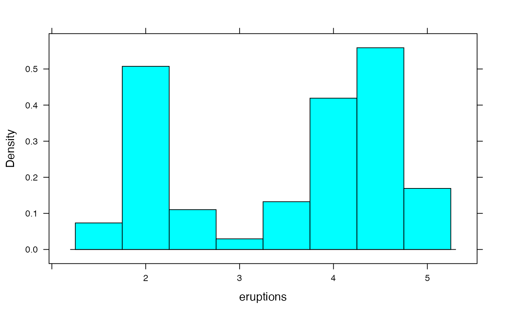
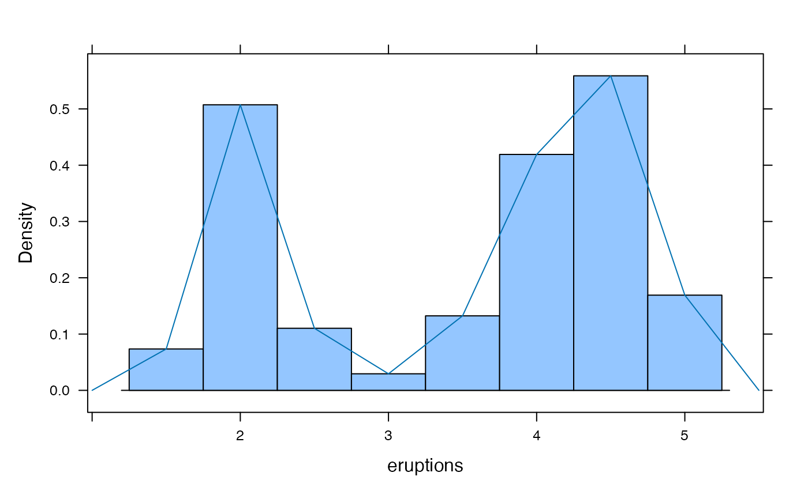

Frequency polygons are an alternative to histograms that make it simpler to overlay multiple distributions.
freqpolygon( x, ..., panel = "panel.freqpolygon", prepanel = "prepanel.default.freqpolygon" ) prepanel.default.freqpolygon( x, darg = list(), plot.points = FALSE, ref = FALSE, groups = NULL, subscripts = TRUE, jitter.amount = 0.01 * diff(current.panel.limits()$ylim), center = NULL, nint = NULL, breaks = NULL, width = darg$width, type = "density", ... ) panel.freqpolygon( x, darg = list(), plot.points = FALSE, ref = FALSE, groups = NULL, weights = NULL, jitter.amount = 0.01 * diff(current.panel.limits()$ylim), type = "density", breaks = NULL, nint = NULL, center = NULL, width = darg$width, gcol = trellis.par.get("reference.line")$col, glwd = trellis.par.get("reference.line")$lwd, h, v, ..., identifier = "freqpoly" )
| x | a formula or a numeric vector |
|---|---|
| ... | additional arguments passed on to |
| panel | a panel function |
| prepanel | a prepanel function |
| darg | a list of arguments for the function computing the frequency polygon.
This exists primarily for compatibility with |
| plot.points | one of |
| ref | a logical indicating whether a horizontal reference line should be
added (roughly equivalent to |
| groups, weights, jitter.amount, identifier | as in |
| subscripts | as in other lattice prepanel functions |
| center | center of one of the bins |
| nint | an approximate number of bins for the frequency polygon |
| breaks | a vector of breaks for the frequency polygon bins |
| width | width of the bins |
| type | one of |
| gcol | color of guidelines |
| glwd | width of guidelines |
| h, v | a vector of values for additional horizontal and vertical lines |
a trellis object
This function make use of histogram to determine overall layout. Often
this works reasonably well but sometimes it does not. In particular, when groups is
used to overlay multiple frequency polygons, there is often too little head room.
In the latter cases, it may be
necessary to use ylim to determine an appropriate viewing rectangle for the
plot.
freqpolygon(~age | substance, data=HELPrct, v=35)freqpolygon(~age, data=HELPrct, labels=TRUE, type='count')freqpolygon(~age | substance, data=HELPrct, groups=sex)## comparison of histogram and frequency polygon histogram(~eruptions, faithful, type='density', width=.5)